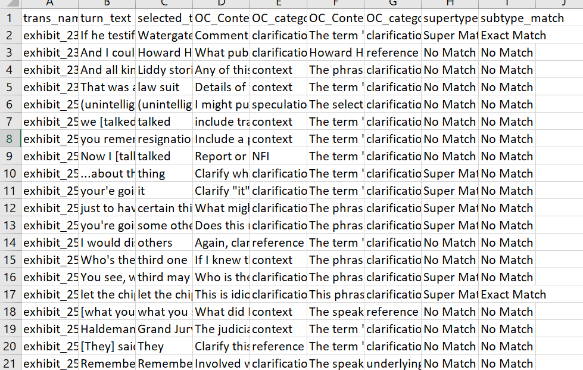
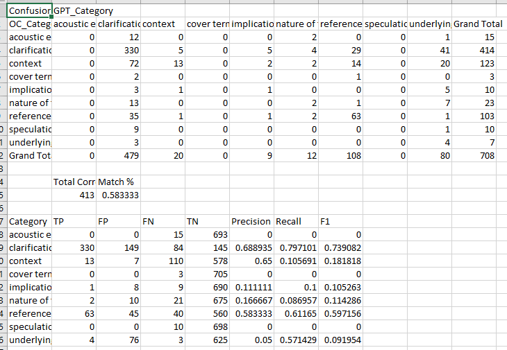

Project views



Research problem
Conversational transcripts are unstructured, while downstream analysis requires consistent categories. The project used a structured taxonomy of operator comments to turn transcript content into analyzable annotations.
Pipeline
I worked on an AI-assisted annotation platform and automated processing workflows that aligned transcripts, annotations, and model outputs. The goal was to make model behavior measurable against a human-labeled reference rather than evaluate outputs impressionistically.
Evaluation
The evaluation framework compared LLM-generated output with human ground truth using precision, recall, fuzzy matching, and confusion matrices. Experiments were designed to expose inconsistencies and edge cases in classification performance.
What this demonstrates
This work is less about prompting and more about evaluation engineering: defining a target representation, aligning messy inputs, establishing ground truth, selecting metrics, and diagnosing where an LLM classification pipeline fails.